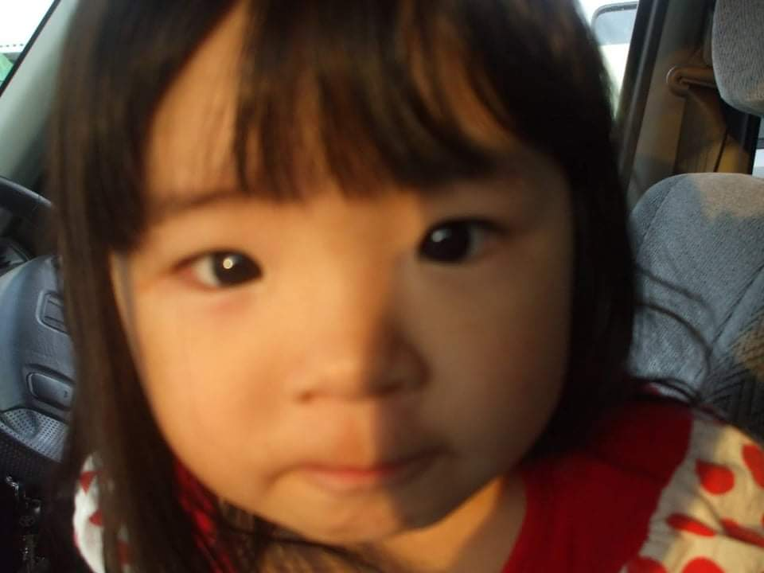

Emily Iyukari Soma Hamano

Sobre mim:
Meu MBTI é ENFP Ativista;
Meu Signo é Aquário;
Sou Japonesa;
vivo no Brasil desde os 2 anos,
tenho um apelido muito zoado ;-;
Meus hobbies:
Faço crochê;
Assisto animes de gênero: shounen, romance e comédia;
leio mangás de gênero: romance.
Algo legal que me aconteceu?
Viajei para o evento DevFestCerrado em Goiânia, foi muito divertido,
me peguei hiperfocada em uns joguinhos, nem pareceu que passei horas lá kkkk;
Tenho reassistido meu anime preferido de infância "Inuyasha";
Tô reassistido também "Rebelde";
Como me vejo daqui 5 a 10 anos?
Eu não tenho ideias muito concretas sobre, no entanto, quero estar formada
ou estudando para me formar em um curso dos sonhos, ou ja ter visitado ao menos
uma vez o Japão.